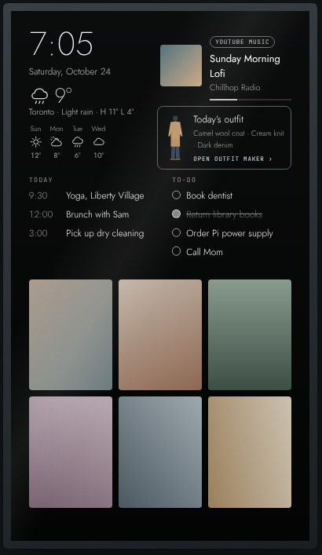
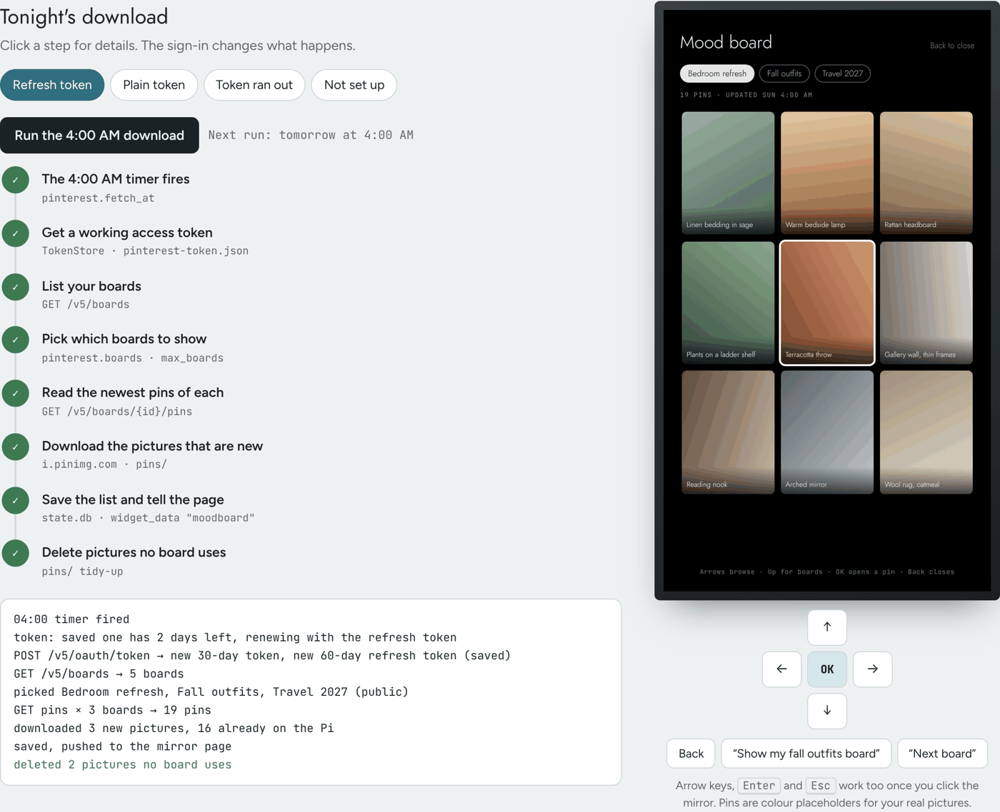
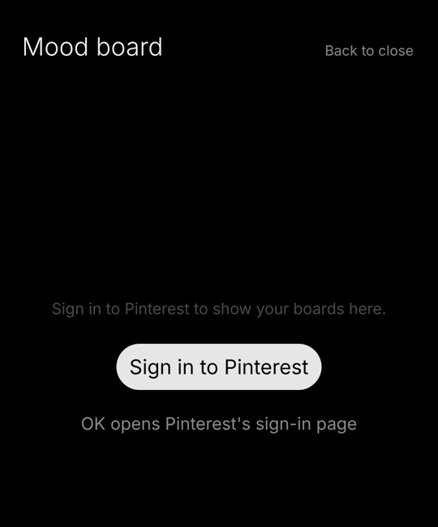

Smart Mirror
A personal, non-commercial project by Mason (mason-98 on GitHub): an old fitness mirror rebuilt around a Raspberry Pi, so it shows the time, weather, calendar, to-do list and a Pinterest mood board in the bedroom.

How it uses Pinterest
The mood board shows pins from my own Pinterest boards on the mirror. It is used by one person, me, on my own account. It is not offered to anyone else and has no other users.
- Sign-in: I sign in once with Pinterest's own OAuth page. The mirror never sees my password.
- Read-only: it asks for
boards:read,pins:read,boards:read_secretandpins:read_secret, and only lists my boards and reads the pins on them. It never creates, edits, saves or deletes anything on Pinterest. - Once a night: at 4 AM it downloads the pins on the boards I picked, as small copies about 600 px wide, so the mirror can show them without loading pinterest.com.
- Stays at home: the pictures and the sign-in tokens are kept only on the Raspberry Pi in my house. They aren't sent to any other service, sold or shared.


Contact
Mason, Greater Toronto Area, Canada. Reach me through github.com/mason-98.